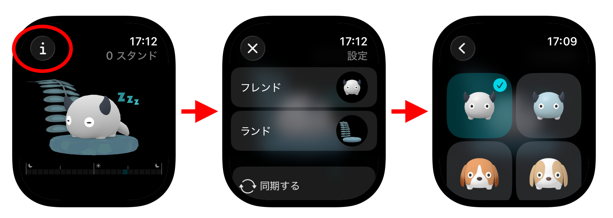
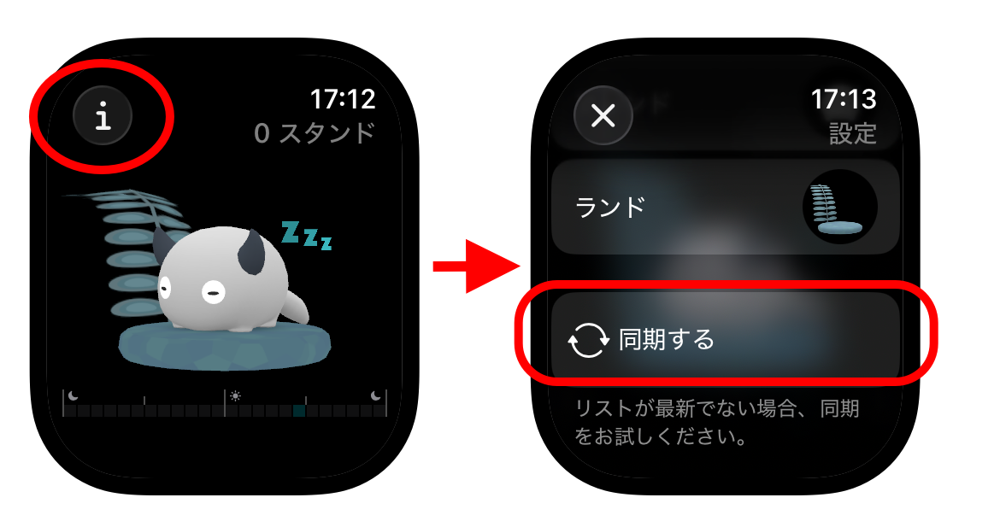

ヘルプ
Apple Watch アプリの使い方
※ ご利用には watchOS 10 以上が必要です。
Standland の Apple Watch アプリの使い方はかんたん。
アプリを起動すればすぐに、その日のスタンド数、スタンド状況が表示されます。Digital Crownを回していろんな角度から眺めることもできます。
フレンドが起きていればその時間はスタンド済みです。ぜひスタンドして、フレンドを起こしてくださいね。

フレンド、ランドの変更方法
表示するフレンドやランドは、iPhoneで取得済みの中から選択できます。
1. 画面左上の (i) をタップ
2. 変更したいものをタップして選択画面へ

リストが最新でない場合
iPhoneで取得したフレンドやランドは、自動的に選択リストに追加されます。
もしリストが最新でない場合は、「同期する」ボタンをタップして同期をお試しください。
それでもリストが最新にならない場合は、お手数ですが、Apple WatchとiPhoneの再起動を行い、通信状態の良い場所で、再度同期をお試しください。
